UN MOTEUR 3D PENSÉ DÈS LE JOUR 1 POUR LES AGENTS IA
La plupart des moteurs sont construits autour d'interfaces graphiques opaques où une IA est aveugle.
AI Engine renverse le problème : tout le moteur se pilote en ligne de commande
(aie), chaque format est du JSON strict documenté par un schéma généré depuis les types
Rust (schemars), chaque commande renvoie un rapport JSON structuré avec codes d'erreur stables et
indications de correction, et la simulation est 100 % déterministe. L'éditeur visuel
(aie-editor) et le jeu (aie-play) ne sont que des fenêtres sur exactement les mêmes fichiers.
PILOTABLE & VÉRIFIABLE PAR AGENT
aie schema, aie validate, aie sim --watch/--events/--why, aie ask (dialogue avec l'éditeur ouvert), aie diff, aie anim check, aie render, aie bench et aie audio analyze. Zéro panique sur entrée utilisateur : chaque anomalie est un Diagnostic typé.
SIMULATION & INSTANTANÉS BIT-EXACTS
ECS hecs à pas fixe, parallélisme déterministe par lots (rayon), empreinte d'état World::state_hash en xxh3, et instantanés binaires/JSON rejouables au bit près — y compris la physique Rapier, les fragments de destruction et le mixeur audio.
FICHIERS COMME SOURCE DE VÉRITÉ
aie-editor (eframe / wgpu) surveille le disque en continu (scène < 500 ms, assets < 1 s, partie en cours incluse), gère 200 niveaux d'undo/redo, le découpage 3D de meshes et l'automatisation scriptée (--do, --screenshot).
LE MOTEUR EN ACTION
Séquences générées directement par le moteur via aie render sur Vulkan — aucune maquette, chaque frame provient du renderer wgpu et de la simulation déterministe réelle.
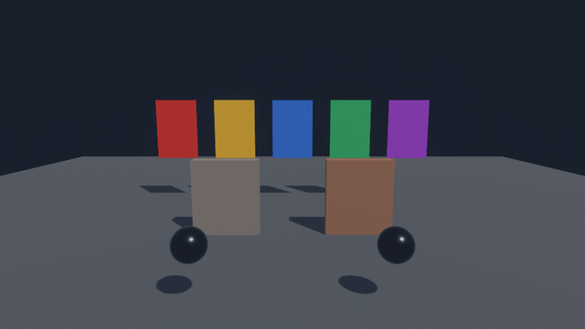
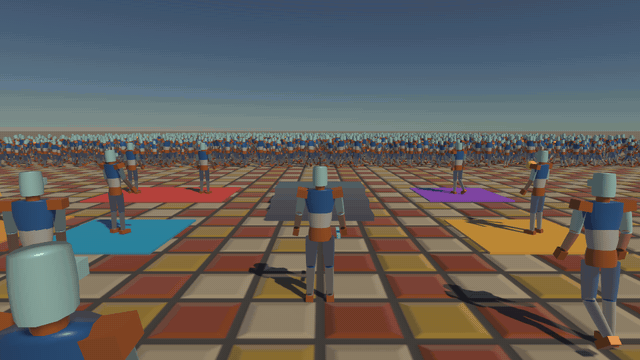
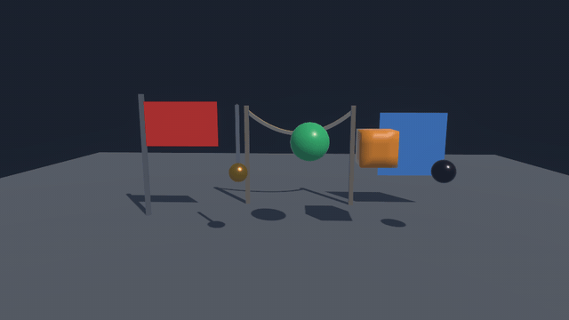
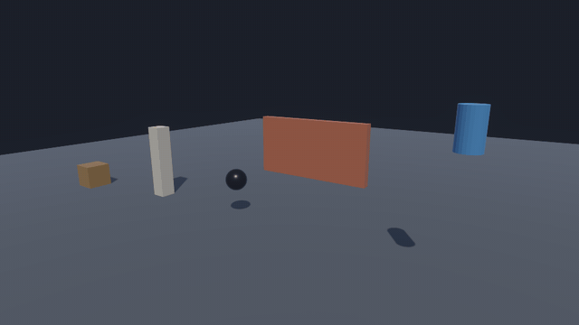
PERFORMANCES RÉELLES SUIVIES EN CI
Chaque jalon est mesuré automatiquement par node tools/perf.mjs sur plus de 40 scénarios de stress
(tools/perf-baseline.json) avec détection de régression sur le temps de tick CPU, le temps de frame GPU et l'empreinte d'état.
15 CRATES EN 6 COUCHES ACYCLIQUES
Chaque crate déclare sa couche dans son Cargo.toml : une crate ne peut dépendre que de couches
strictement inférieures (vérifié automatiquement par tools/code-map.mjs --check). La simulation
tourne sans GPU en quelques millisecondes et le renderer reste testable sans scène.
| COUCHE | CRATES | RÔLE |
|---|---|---|
| L0 | aie_core |
Maths (glam), Diagnostic, JSON strict, FrameData, maillages & mesh_split |
| L1 | aie_scene · aie_render · aie_physics · aie_animation · aie_audio |
Schémas de scène, renderer wgpu, physique Rapier, animation GPU et audio bit-exact |
| L2 | aie_world · aie_assets |
Monde ECS hecs déterministe, cache disque (.aiem / KTX2 / BCn) & import glTF/FBX |
| L3 | aie_test · aie_script · aie_input |
Tests déclaratifs *.test.json, scripting Luau (mlua) et entrées rebindables (gilrs) |
| L4 | aie_cli · aie_editor · aie_runtime |
Trois clients des mêmes crates : CLI aie, éditeur visuel et runtime aie-play |
| L5 | aie_game |
Point d'entrée d'un jeu combinant ses propres systèmes Rust natifs aux blocs du moteur |
// FLUX DE DONNÉES — AI ENGINE (RUST 2024) scenes/*.scene.json ──▶ aie_scene::load (ValidScene) │ ▼ aie_world::World (ECS hecs · pas fixe · rayon) ├── components/*.luau (aie_script / Luau) ├── systèmes Rust jeu (impl System · ADR 0005) ├── physique Rapier3D (déterminisme renforcé) ├── animation & IK (graphes, motion matching) └── state_hash (xxh3) (snapshots & tests) │ ▼ extract_frame_blended() ──▶ FrameData │ // PIPELINE GPU (aie_render · wgpu 30 · WGSL) env/IBL ─▶ GPU skinning ─▶ cull & occlusion ─▶ CSM shadows ─▶ clustered lights (10k) ─▶ HDR PBR ─▶ sorted transparency ─▶ sky ─▶ TAA/TAAU ─▶ auto-exposure ─▶ bloom ─▶ tonemap
UN SOCLE COMPLET ÉCRIT DE ZÉRO
RENDU PBR & PIPELINE GPU MODERNE
PBR HDR, ombres en cascades (CSM), éclairage en grappes jusqu'à 10 000 lumières dynamiques, ciel atmosphérique & cartes EXR/HDR, transparence triée, TAA et mise à l'échelle temporelle (TAAU), auto-exposition, bloom, tonemap, culling + occlusion GPU et LODs meshoptimizer.
ANIMATION AAA & FOULES SUR GPU
Graphes d'états, mélanges 1D et 2D, couches et masques, montages, IK & pieds plantés, reciblage entre squelettes, morph targets, os à ressort (spring bones), ragdolls, motion matching, hot-reload d'animations et foules jusqu'à 1M d'agents sur GPU.
PHYSIQUE, DÉFORMABLES & DESTRUCTION
Corps rigides parallèles à déterminisme renforcé, contrôleur de personnage, véhicules, volumes de force et d'eau, corps déformables (tissus, corps mous, câbles), et système de destruction dont les fragments sont rejoués à l'identique sur reprise d'instantané.
AUDIO BIT-EXACT & CODECS MAISON
Décodeurs FLAC, Vorbis et MP3 écrits maison en Rust pur, streaming disque ou mémoire, cache PCM16/ADPCM, mixeur sans état (reprise d'instantané égale au bit au mix continu), sortie carte son lock-free (rtrb + cpal) avec marge adaptative et vérification hors ligne (aie audio analyze).
PIPELINE 3D, CACHE & DÉCOUPAGE DE MESH
Import glTF 2.0, OBJ et FBX (squelettes, skins, morphs, PBR), PNG/JPEG/TIFF/TGA/HDR/EXR/KTX2, compression BCn (intel_tex_2), cache binaire .aiem, plus un outil de découpage de mesh 3D (aie_core::mesh_split + encodeur GLB 2.0 + aperçu 3D dans l'éditeur).
LUAU, OUTILS IA & DISCIPLINE D'INGÉNIERIE
Scripts Luau (mlua) pour la logique de gameplay et systèmes Rust natifs pour le code critique. 84 ADRs documentés, unsafe non documentés interdits au compilateur, journal unifié (ADR 0076) et suite d'outillage (check.mjs, stress.mjs, couverture-rejeu.mjs).
L'ÉDITEUR & LES RENDUS EN DIRECT
Captures issues directement d'aie-editor et du renderer wgpu sur Vulkan. Cliquez pour agrandir.
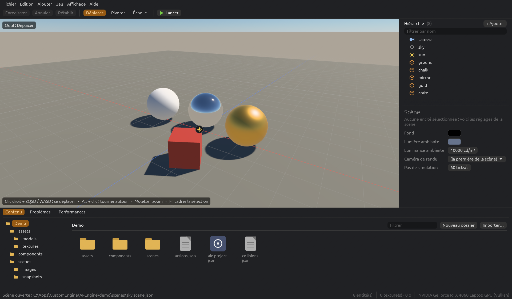
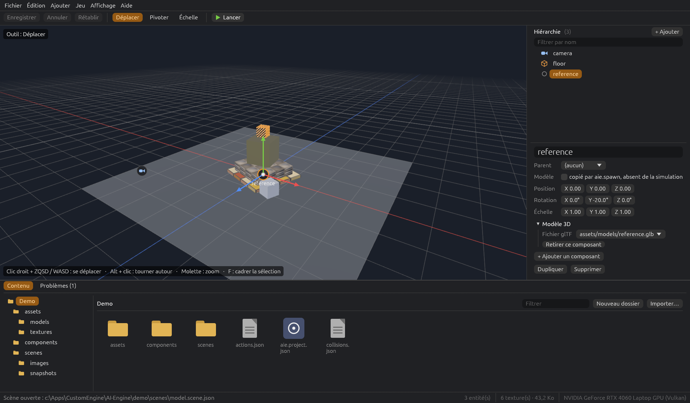
aie.spawn), onglet Problèmes et rechargement disque en temps réel.
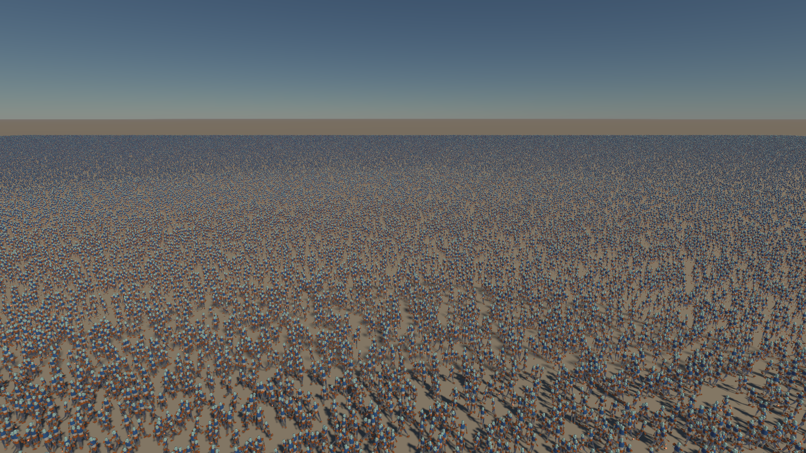
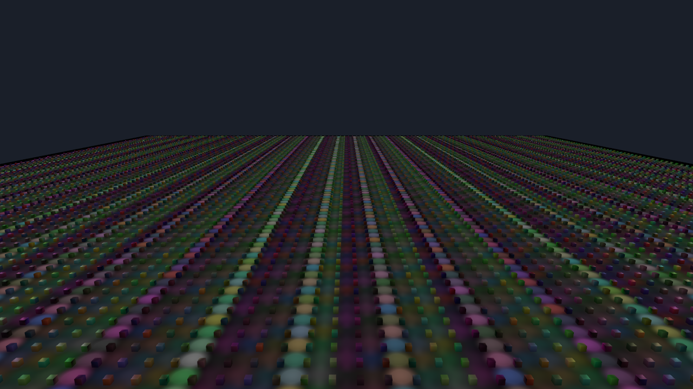
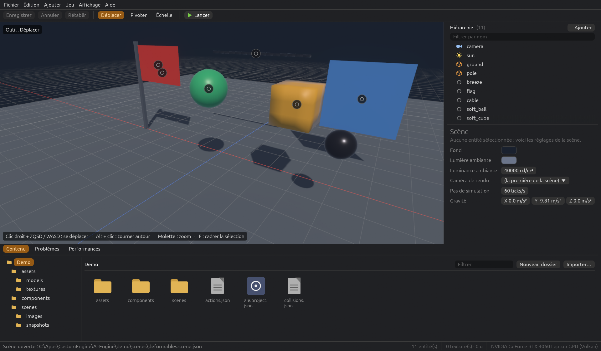
aie-editor.
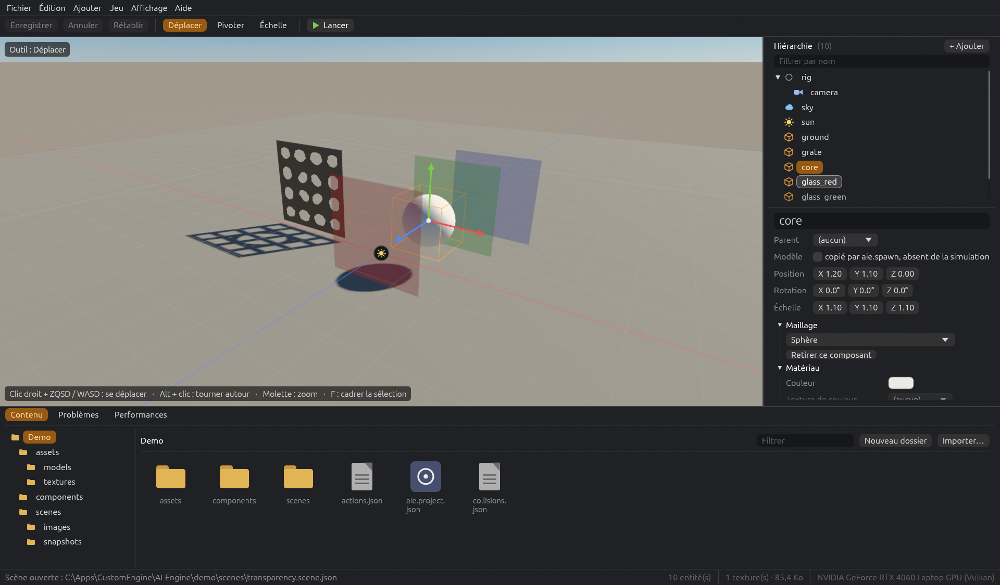
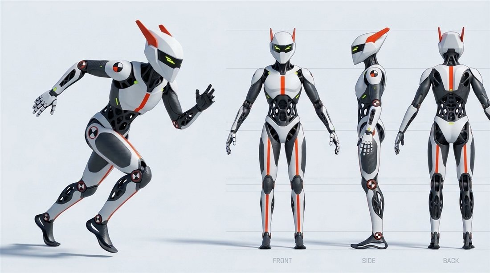
third_person généré par aie new mon_jeu (course, saut, caméra tierce personne).
ÉTAT DU DÉVELOPPEMENT
SOCLE MOTEUR, RENDU, PHYSIQUE & AUDIO
- > Simulation & CLI IA ECS déterministe, schémas JSON, snapshots,
aie ask,aie sim,aie test,aie diffet scripts Luau. - > Rendu & Animation PBR HDR, CSM, 10k lumières, TAA/TAAU, occlusion GPU, skinning GPU 1M, IK, motion matching et découpage de mesh 3D.
- > Physique & Audio maison Rapier3D déterministe, véhicules, déformables, destruction, et moteur audio complet avec codecs FLAC/Vorbis/MP3 maison.
PROCHAINS JALONS
- > Audio spatial & effets (lots suivants) Spatialisation 3D, bus de mixage, atténuation et effets DSP temps réel toujours déterministes.
- > Outils éditeur & workflow jeu Enrichissement des panneaux visuels d'
aie-editor, édition avancée d'animation et packaging autonome. - > Démo jouable vitrine Construction d'un jeu complet piloté de bout en bout par les outils agents IA et la suite de tests
*.test.json.